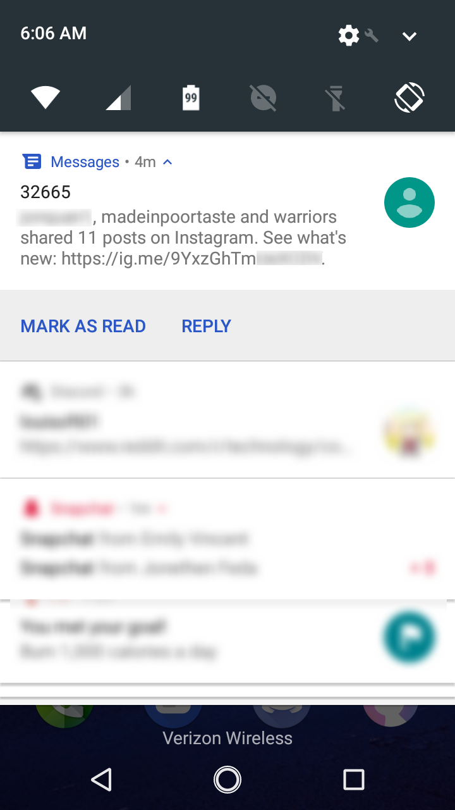

Instagram
Instagram, developed by Facebook is designed to be a free smartphone app that allows users to post pictures and videos to a feed, much like any micro-blogging platform. It is popular among teenagers and millennials. In fact businesses are now getting into the Instagram scene and creating their own Instagram profiles.
Spyware Level: EXTREMELY HIGH
Instagram is spyware because it identifies you with EXIF data, and demands direct access to excessive amounts of personal information that has nothing to do with the
service it provides.
It Logs Your GPS Locations from EXIF Data In Your Photos
Whenever a user takes a picture on a modern smartphone, GPS Coordinates are stored in a photos. This is setting that one can easily turn off. However, many users don't even realize their phone is doing so. Instagram takes advantage of that. It will scan through all of the user's photos and look for this EXIF Data[1]. When it does, it logs the GPS Coordinates into a database. This database shows exactly where the user has been and what pictures they have taken. The only way to turn this off is to turn off EXIF tags on your camera (You should turn it off due to the numerous privacy issues that emerge from EXIF data).
It Demands Too Many Permissions and Punishes The User for Denying It Permissions
Instagram is pretty demanding when it comes to permissions. When I tested the app on my spare Android Phone, it wanted access to:
- Phone owner's full name
- Phone Contacts
- Phone calendar
- Send and receive SMS Messages (Which may cost money)
- All files on phone and files on MicroSD card
- Phone camera
- Phone microphone
- Identifying device information: IEMI number, carrier, SIM status, phone number
- Control phone vibrator motor
Denying the app access to: the phone owners full name, contacts stored on the phone, the phones calendar, permission to send and receive SMS messages, and identifying device information resulted in annoying nags containing some excuse as to why they would they would like access to said permission.
However, if you deny it access to: All files on the phone and MicroSD card, phone camera, phone microphone, and phone vibrator motor, the app will punish the user by disabling various features in the app that will most likely operate just fine with that permission denied.
Instagram Owns Any Content You Post on Their Service
Many users think that when they upload photos to Instagram, they retain all rights or it becomes public domain. This is far from the truth. When you upload a photo to Instagram. Instagram gains all rights to your work and they can anything they want to it[2]. Since most users don't bother reading the terms of service, they are ignorant of this and will often use the work they uploaded to Instagram on other platforms; doing so is against international copyright law treaties. Basically, the user is breaking copyright laws for simply using their own work they posted to Instagram on other platforms
You Must Provide a Telephone Number or Email Address to Sign Up
In order to sign up for the app, you must provide either a telephone number or an email address. You will not be allowed to create an account if you don't provide a either one. This is obviously a method Instagram to uniquely identify you.
If you provided Instagram with a cellular telephone number and uninstalled the app, you will get constant nags to "see whats new on Instagram". Fortunately these nags will go away after about a month, and can be blocked by simply blocking the number

It Broadcasts What You Do In The App To Other Users
Introduced in January 2018, Instagram sports a new spyware feature that broadcasts what you doing in the app to anyone that DMs you in the app[3]. But, it goes further, it reportedly also broadcasts what comments you read and what photos you like in the app. On microblogging platforms like Instagram, the majority of users like their actions to be private. A lot of users have complained about this feature and they stated that the feature is here to stay. Also, there is no way to disable this feature either.
It Might Spy in On Your Conversations
In September of 2017 users started reporting ads appearing on their Instagram feed that they spoke to another person about and never once looked it up online. While Instagram is known to use super cookies (cookies that can hop to different computers on a network and use certain techniques to avoid being deleted), this is next level. A person conducted a test where on a hike they randomly mentioned a projector[4]. Before this hike they showed no interest in projectors. They than give Instagram about 15 hours and when the person checked their feed the next morning, there was an ad for a projector. Sadly, this is overwhelming proof that Instagram is indeed listening in. Of course, when questioned by various news outlets, Instagram said they never did this, despite their being overwhelming evidence that they are indeed tapping users microphones.
Sources
1
Make Use Of - Ways Instagram Is Spying on You
[archive.is]
[archive.org]
2
Instagrams TOS
[archive.is]
3
HelloGiggles Article on the New DM feature
[archive.is]
4
Instagram Listens In
[archive.is]
This article was last edited on 2/24/2019
If you want to edit this article, or contribute your own article(s), contact us on XMPP over in spyware@conference.nuegia.net, or visit us at the git repo on Codeberg. All contributions must be licensed under the CC0 liscence to be accepted.

Back to catalog